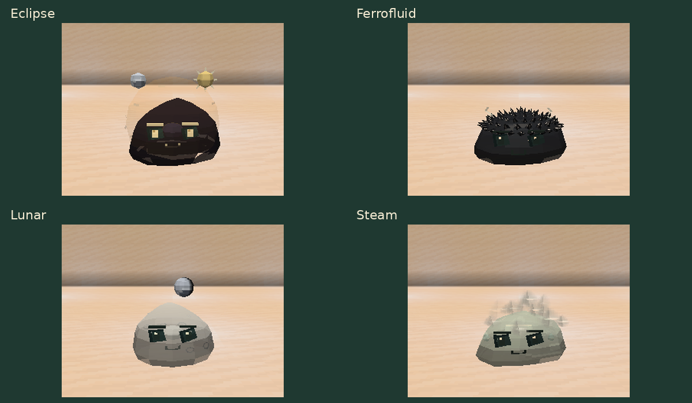
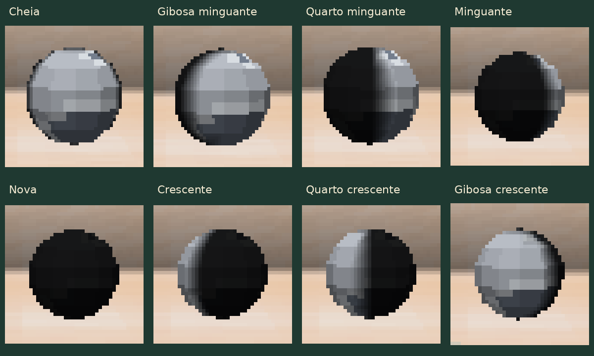

Aparências e fases lunares
Guia do mod · Galeria das espécies
O Eclipse tem uma aura esférica e dois astros que orbitam acima do corpo. O Ferrofluid tem uma cobertura de espinhos pequenos na cabeça. O Steam solta fumaça pela coroa, ombros e laterais; as nuvens sobem e se dissipam.

As oito luas do Lunar
Cada Lunar nasce com uma das oito fases. Sua lua flutua acima da cabeça, faz uma pequena órbita e conserva a fase quando o mundo é salvo ou quando o slime é transportado em cápsula. A fase é apenas visual e não acompanha o calendário do mundo.
Os recortes abaixo mostram em detalhe a lua flutuante de cada variante.

| Valor | Fase |
|---|---|
| 0 | Cheia |
| 1 | Gibosa minguante |
| 2 | Quarto minguante |
| 3 | Lua minguante |
| 4 | Nova |
| 5 | Lua crescente |
| 6 | Quarto crescente |
| 7 | Gibosa crescente |
Invocar para comparar
Com comandos habilitados, este exemplo cria um Lunar com fase própria:
/summon slimeevolution:evolution_slime ~ ~ ~ {Species:"slimeevolution:lunar"}
Para escolher a fase, acrescente LunarPhase de 0 a 7. Por exemplo, lua nova:
/summon slimeevolution:evolution_slime ~ ~ ~ {Species:"slimeevolution:lunar",LunarPhase:4}
Os outros três IDs de espécie são slimeevolution:eclipse,
slimeevolution:ferrofluid e slimeevolution:steam; substitua o valor de
Species no primeiro comando.